🎓 Réalisation en cours de formation
-
 VS Code
Éditeur de code
VS Code
Éditeur de code
- phpMyAdmin Interface web de gestion de bases de données MySQL
-
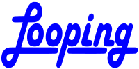
Looping Logiciel conçu pour la modélisation conceptuelle de données qui permet de générer automatiquement des scripts SQL. - Trello Outil en ligne permettant de gérer des projet et des tâches personnelles
AP 1 : Projet GreenIT personnalisé
🛠️ Compétences & sous-compétences mises en oeuvre
- Mettre en place et vérifier les niveaux d'habilitation associés à un service
- Vérifier le respect des règles d’utilisation des ressources numériques
- Analyser les objectifs et les modalités d'organisation d'un projet
- Planifier les activités
Pour notre premier projet en Atelier de professionnalisation, on a été chargé de choisir notre projet en groupe. Notre groupe a donc décidé de se penché sur le thème du GreenIT et de la réduction de l'empreinte carbone numérique.
📸 Preuves
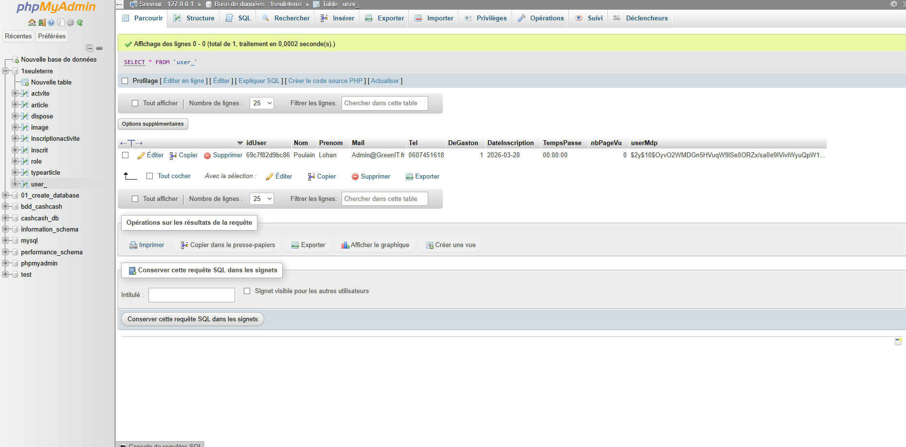
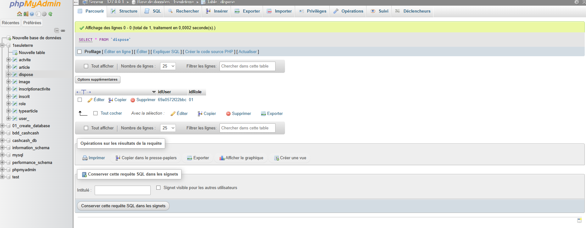
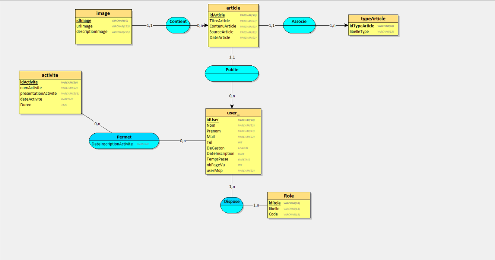
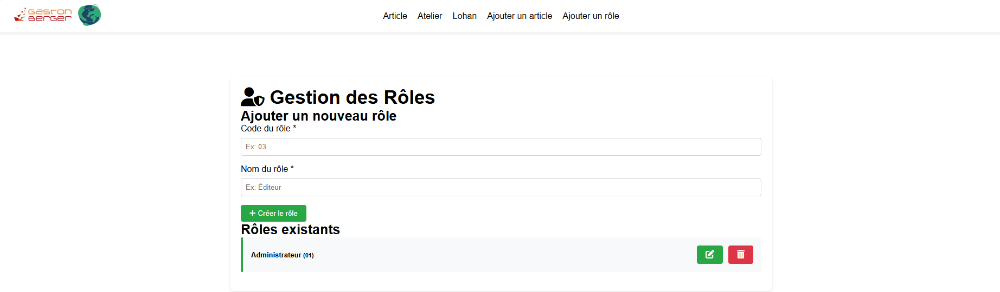
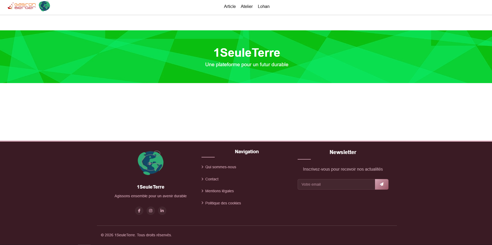
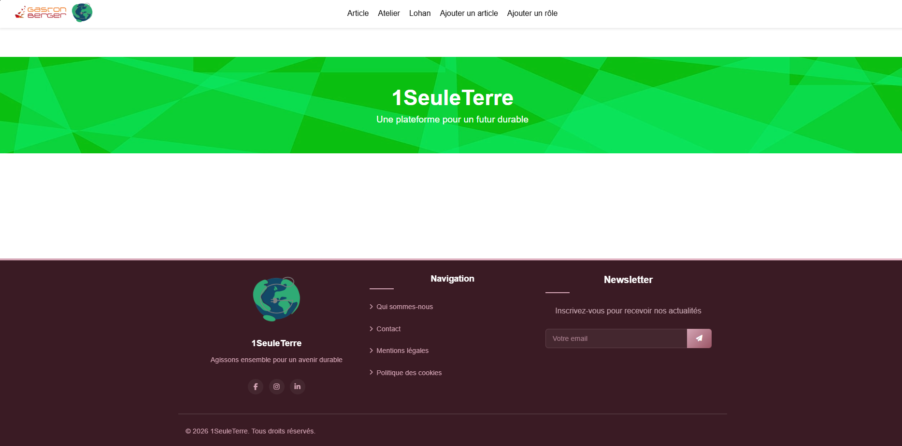
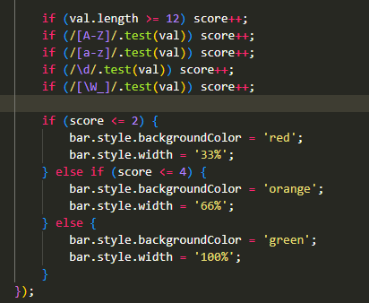
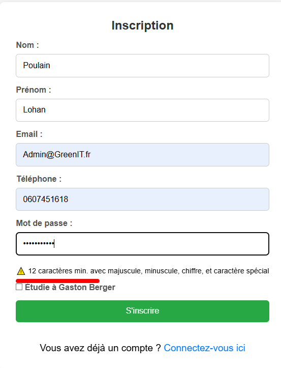
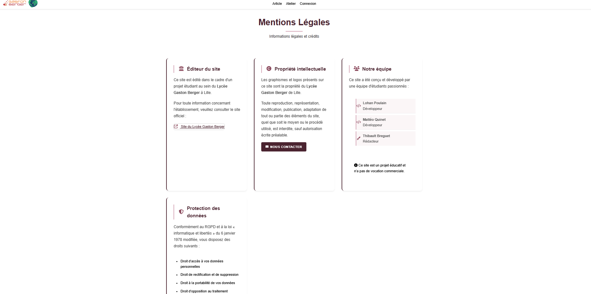
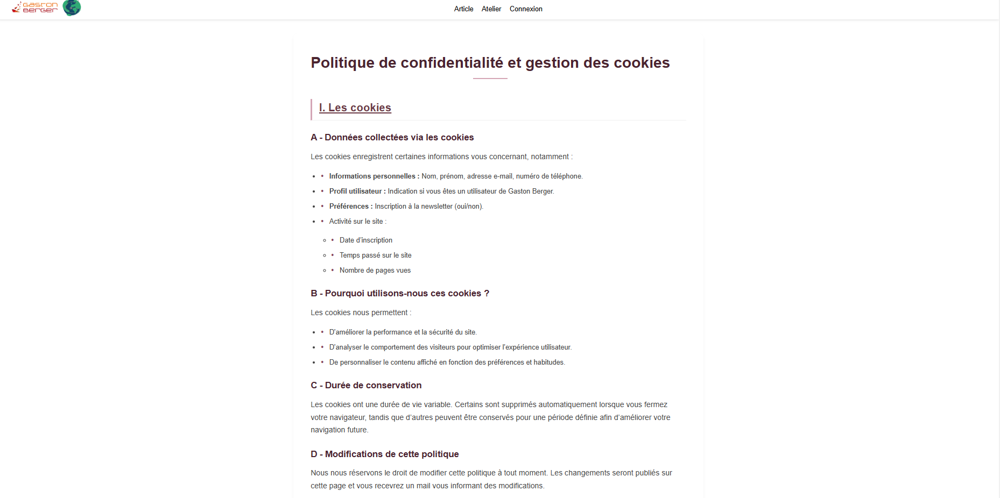
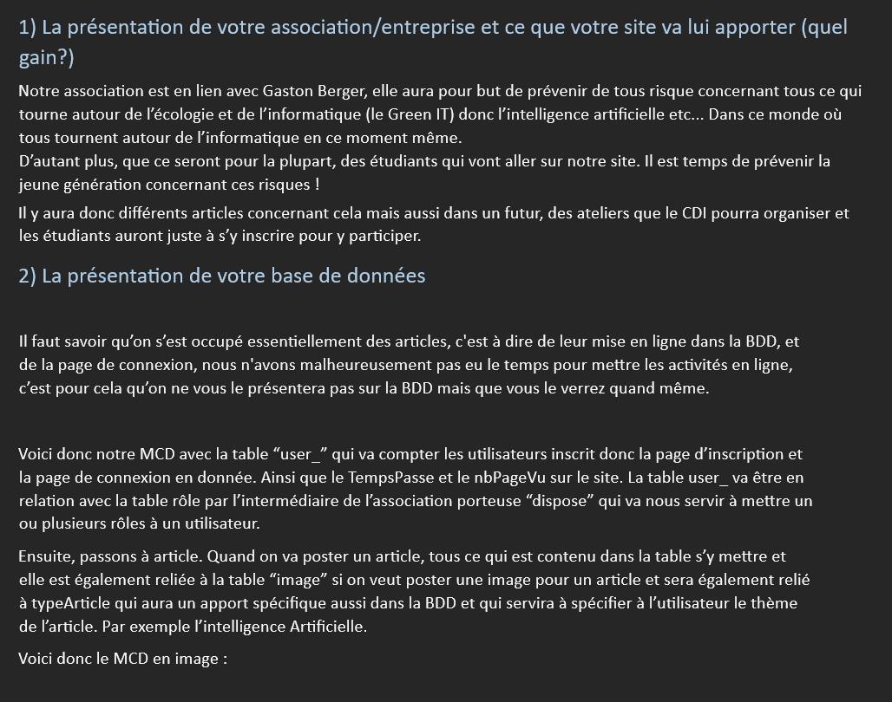
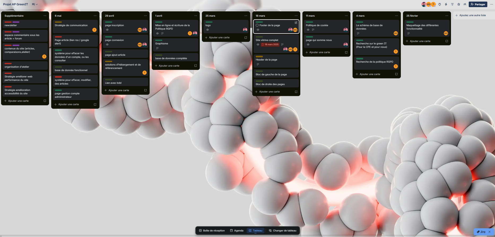